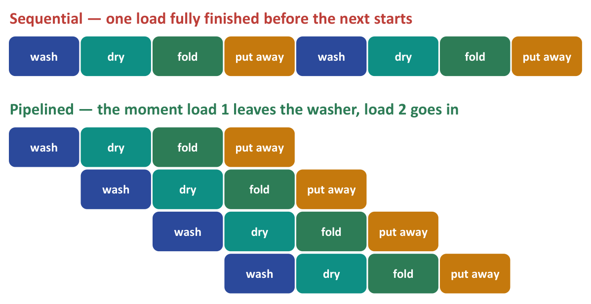
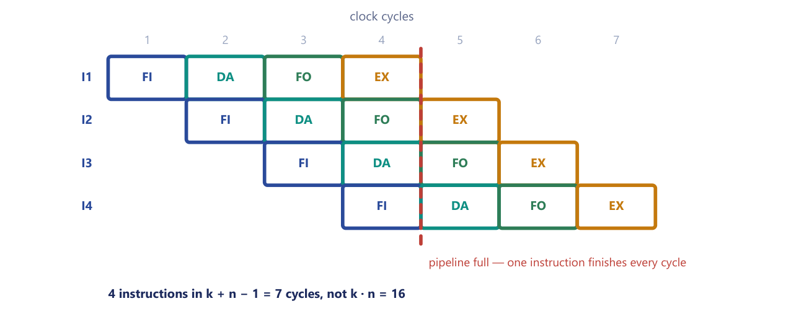

Chapter 13: Instruction Pipelining¶
Stop the machinery idling: how overlapping the work of successive instructions raises throughput, what speedup it can give, and why the ideal is never quite reached
Everything we have said about the basic computer so far has described a machine that does one thing at a time. An instruction is fetched, decoded, given its operand and executed, and only when \(SC \leftarrow 0\) has returned the timing to \(T_0\) does the next instruction begin. While the operand is being fetched, the circuits that fetch instructions sit idle. While the instruction is being executed, the decoder is idle. The machine is busy, but every part of it is idle for most of the time.
Pipelining removes this idleness by overlapping the work. While one instruction is being executed, the next is already having its operand fetched, the one after that is being decoded, and the one after that is being fetched from memory. The processing is split into stages, called segments, connected in series, and several instructions are in flight at once, each at a different segment. Nothing about any single instruction gets faster; what rises sharply is the number of instructions that finish per second. In this chapter we meet the idea through an everyday example, build the four-segment instruction pipeline, draw its space-time diagram, derive the speedup formula and its ceiling, and finally see the three kinds of hazard that stop real pipelines from reaching that ceiling.
What you will learn
- Explain pipelining as overlapped execution, and state the difference between latency and throughput.
- Name and describe the four segments FI, DA, FO and EX of the instruction pipeline.
- Draw a space-time diagram for any number of segments and tasks and read the cycle count from it.
- Use the speedup formula \(S = n\,t_n / ((k + n - 1)\,t_p)\), find its ceiling, and apply it with unequal stage times.
- Explain why the clock of a pipeline is set by its slowest segment.
- Describe structural, data and control hazards, with a cause and a remedy for each, and explain why they insert bubbles.
13.1 The idea: overlap the work¶
The laundromat¶
Suppose you have four loads of laundry, each of which has to be washed, dried, folded and put away. The naive way is to finish load 1 completely before starting load 2. But while load 1 is being folded the washer and dryer stand idle, and while it is being dried the washer is idle. Pipelining says: the moment load 1 leaves the washer, put load 2 in. Now the washer, dryer, folding table and shelf are all busy at once. Figure 13.1 compares the two ways of working on a time grid in which each step takes one slot.

In the sequential row, two loads take 8 slots and at every moment three of the four machines are idle. In the pipelined rows, four loads finish in 7 slots instead of 16. In numbers, if each of the three steps (wash, dry, fold) takes 30 minutes, one load takes \(3 \times 30 = 90\) minutes. Four loads one after another take \(4 \times 90 = 360\) minutes, whereas pipelined they take \(90 + 3 \times 30 = 180\) minutes, twice as fast, with no faster machine anywhere.
Example 13.1: The laundry arithmetic
Problem. Washing, drying and folding each take 30 minutes. Compare the time for four loads done one at a time with the time when each load enters the washer as soon as the previous one has left it.
Working. One load takes \(30 + 30 + 30 = 90\) minutes. One at a time: \(4 \times 90 = 360\) minutes. Pipelined, the first load needs the full 90 minutes to pass through all three machines; after that a load emerges every 30 minutes, the time of one step, so the other three loads take \(3 \times 30 = 90\) minutes more: \(90 + 3 \times 30 = 180\) minutes. The ratio is \(360 / 180 = 2\).
Answer. 360 minutes against 180 minutes. A single load still takes 90 minutes in both cases; the gain is that results come out every 30 minutes instead of every 90.
Latency does not improve, throughput does¶
You did not make any single machine faster. You stopped them idling. Each individual load still takes exactly as long as before, but what soars is throughput: how many loads finish per hour. That distinction, latency unchanged, throughput multiplied, is the single most important idea in this chapter.
- Latency is how long one task takes from start to finish. Pipelining does not improve it: one load still takes 90 minutes, and one instruction still passes through all \(k\) segments.
- Throughput is how many tasks finish per unit time. After the pipeline has filled, one result comes out every clock cycle instead of every \(k\) cycles.
An assembly line works in the same way. It overlaps the building of several cars: the processing is divided into segments connected in series, and each segment does part of the work and passes the result to the next. In a processor the segments are circuits (an instruction fetch unit, a decoder, an operand fetch unit, an execution unit) and the cars are instructions. Registers between the segments hold the intermediate results.
13.2 The four-segment instruction pipeline¶
A common way to divide the processing of an instruction is into four segments.
| Segment | Name | Work done |
|---|---|---|
| 1 | FI | Fetch the instruction from memory |
| 2 | DA | Decode the instruction and calculate the effective address |
| 3 | FO | Fetch the operand from memory |
| 4 | EX | Execute the operation |
Table 13.1. The segments of a four-stage instruction pipeline.
You will recognise these jobs. They are the same ones that the basic computer performs one after another as the timing steps \(T_0\) to \(T_6\) of a single instruction: the fetch at \(T_0\) and \(T_1\), the decode and the effective address (the indirect step) at \(T_2\) and \(T_3\), the operand fetch and the execution at \(T_4\) onwards. In the basic computer these four jobs happen strictly one after another, and nothing else is in flight. Pipelining is the same work, with four instructions in different stages at the same time.
Segments are separated by registers¶
Between every two segments sits a buffer register that holds the partial result of the instruction as it leaves one segment and enters the next. That is what lets segment 2 start on instruction 2 while segment 3 is still busy with instruction 1: nobody has to wait for the whole job to finish. All the registers are clocked together, and in each clock cycle every instruction moves one segment to the right.
The clock is set by the slowest segment¶
All segments share one clock, so the clock period of the pipeline, \(t_p\), must be long enough for the slowest segment (plus any delay in the buffer registers). Making a fast segment faster does not help; only improving the slow one does. Balancing the stages matters as much as adding them.
Example 13.2: Unequal stages set the clock
Problem. A pipeline has four segments needing 2, 2, 5 and 2 ns. What is the clock period, and how does it compare with the average stage time?
Working. Every segment must finish inside one clock period, so the period must accommodate the slowest: \(t_p = \max(2, 2, 5, 2) = 5\) ns. The average stage time is \((2 + 2 + 5 + 2)/4 = 2.75\) ns, but the pipeline cannot run at 2.75 ns per stage: the 5 ns segment would not be finished. The other three segments idle for part of every cycle: for 3 ns in each of the 2 ns stages. Without pipelining one instruction takes \(2 + 2 + 5 + 2 = 11\) ns, so the best possible speedup is \(11 / 5 = 2.2\), well below the \(k = 4\) that four equal segments would suggest.
Answer. \(t_p = 5\) ns, not 2.75 ns, and the speedup can never exceed \(11/5 = 2.2\).
13.3 The space-time diagram¶
The standard picture of a pipeline is the space-time diagram. In the version for an instruction pipeline, Figure 13.2, the rows are instructions and the columns are clock cycles, and each cell names the segment that the instruction occupies in that cycle.

Read the figure. Instruction I1 enters FI in cycle 1, DA in cycle 2, FO in cycle 3 and EX in cycle 4. Instruction I2 starts one cycle later, I3 one later again, and so on. In cycle 4 all four segments are busy at the same time, each with a different instruction (I1 in EX, I2 in FO, I3 in DA and I4 in FI), so the pipeline is full from cycle 4 onwards and a new instruction completes every cycle.
Four instructions finish in 7 cycles instead of \(4 \times 4 = 16\). In general, \(k\) segments and \(n\) instructions take \(k + (n - 1)\) cycles once pipelined, against \(k \cdot n\) cycles unpipelined.
Where does the "\(-1\)" come from? Count the cycles for I1: that is \(k\) of them. Then add one cycle for each of the remaining \(n - 1\) instructions, because after I1 each additional instruction finishes one cycle after its predecessor. The first instruction fills the pipe; after that each extra one costs a single cycle. If you can rebuild that sentence you never need to memorise the formula.
Two ways to draw the diagram¶
Figure 13.2 has one row per instruction. The other common form has one row per segment, which is the form used in the tables below: rows are segments \(S_1 \ldots S_k\), columns are clock cycles, and each cell says which task the segment is working on. Both contain the same information. In the segment view, task \(T_i\) occupies segment \(S_s\) in cycle \(i + s - 1\). The filled cells form a parallelogram; the empty triangles at the start and end are the fill and the drain of the pipeline.
Example 13.3: Five segments, seven tasks
Problem. Draw a space-time diagram for a five-segment pipeline showing the time it takes to process seven tasks.
Working. First find the width of the grid before drawing it: \(n + k - 1 = 7 + 5 - 1 = 11\) clock cycles. The grid is 5 rows deep and 11 columns wide. Segment 1 handles T1 in cycle 1, T2 in cycle 2, ... T7 in cycle 7. Segment 2 is always one cycle behind segment 1, segment 3 one behind that, and so on, so task \(i\) occupies cell (segment \(s\), cycle \(i + s - 1\)).
| Segment | 1 | 2 | 3 | 4 | 5 | 6 | 7 | 8 | 9 | 10 | 11 |
|---|---|---|---|---|---|---|---|---|---|---|---|
| S1 | T1 | T2 | T3 | T4 | T5 | T6 | T7 | ||||
| S2 | T1 | T2 | T3 | T4 | T5 | T6 | T7 | ||||
| S3 | T1 | T2 | T3 | T4 | T5 | T6 | T7 | ||||
| S4 | T1 | T2 | T3 | T4 | T5 | T6 | T7 | ||||
| S5 | T1 | T2 | T3 | T4 | T5 | T6 | T7 |
Check the shape: every column from cycle 5 to cycle 7 is completely full, which is the pipeline running at capacity.
Answer. 11 clock cycles. Without pipelining the same seven tasks would take \(7 \times 5 = 35\) cycles, so the speedup is \(35 / 11 \approx 3.18\).
Example 13.4: Six segments, eight tasks
Problem. Draw a space-time diagram for a six-segment pipeline processing eight tasks, and give the cycle count and speedup in cycles.
Working. The width is \(n + k - 1 = 8 + 6 - 1 = 13\) clock cycles, so the grid is 6 rows by 13 columns.
| Segment | 1 | 2 | 3 | 4 | 5 | 6 | 7 | 8 | 9 | 10 | 11 | 12 | 13 |
|---|---|---|---|---|---|---|---|---|---|---|---|---|---|
| S1 | T1 | T2 | T3 | T4 | T5 | T6 | T7 | T8 | |||||
| S2 | T1 | T2 | T3 | T4 | T5 | T6 | T7 | T8 | |||||
| S3 | T1 | T2 | T3 | T4 | T5 | T6 | T7 | T8 | |||||
| S4 | T1 | T2 | T3 | T4 | T5 | T6 | T7 | T8 | |||||
| S5 | T1 | T2 | T3 | T4 | T5 | T6 | T7 | T8 | |||||
| S6 | T1 | T2 | T3 | T4 | T5 | T6 | T7 | T8 |
Task 1 finishes at the end of cycle 6, task 2 at cycle 7, and so on up to task 8 at cycle 13. The pipeline is completely full during cycles 6, 7 and 8.
Answer. 13 clock cycles, against \(8 \times 6 = 48\) without pipelining. The speedup is \(48 / 13 \approx 3.69\), against a theoretical ceiling of \(k = 6\).
Common slips
Drawing \(7 \times 5 = 35\) columns instead of 11, or forgetting the \(-1\). Say the number out loud before you draw: \(n\) plus \(k\) minus one.
13.4 Speedup and its ceiling¶
The formula¶
Let \(n\) be the number of tasks (instructions), \(k\) the number of segments, \(t_p\) the clock period of the pipeline, and \(t_n\) the time for one task without pipelining. Then
and the speedup is their ratio:
Two questions are worth asking of every pipeline problem. How many cycles? The answer is \(k + n - 1\) pipelined and \(k \cdot n\) unpipelined. How much time? Multiply the pipelined cycle count by \(t_p\), and the number of tasks by \(t_n\).
The ceiling¶
As \(n\) becomes very large, \(k + n - 1\) approaches \(n\), and the speedup approaches the limit
If the work divides perfectly, so that the non-pipelined machine takes \(t_n = k \cdot t_p\), then \(S_{\max} = k\). A \(k\)-segment pipeline can be at most \(k\) times faster, and it never exceeds this. When \(t_n = k\,t_p\) the speedup simplifies to \(S = nk/(k + n - 1)\). The reason \(S\) gets closer to \(k\) as \(n\) grows is that the \(k - 1\) cycles spent filling the pipeline are a fixed overhead; spread over more and more tasks, their share of the total shrinks towards zero.
The next table shows this for a four-segment pipeline with \(t_n = 4t_p\):
| Number of tasks \(n\) | 1 | 2 | 4 | 10 | 100 | 1000 |
|---|---|---|---|---|---|---|
| Speedup \(4n/(n + 3)\) | 1.00 | 1.60 | 2.29 | 3.08 | 3.88 | 3.99 |
Table 13.2. A four-segment pipeline approaches, but never reaches, a speedup of 4.
For a single instruction there is no gain at all: the fill is the whole job.
Misconception: a 4-stage pipeline makes the CPU 4 times faster, full stop
The factor 4 is a ceiling, reached only as \(n \to \infty\) and only if every stage takes equal time and nothing stalls. Real programs hit hazards, stages are rarely perfectly balanced, and the clock is limited by the slowest stage. Pipelining raises throughput, not the latency of any single instruction: one instruction still takes all \(k\) stages to complete, or slightly longer because of the stage registers.
Efficiency and throughput¶
Two more figures of merit are often asked for. The efficiency of a pipeline is the speedup divided by the number of segments, \(S/k\); it is the fraction of the ideal speedup actually achieved. The throughput is the number of tasks completed per unit time, \(n\) divided by the total pipelined time.
Example 13.5: Speedup of a four-segment pipeline
Problem. A 4-segment pipeline has clock period \(t_p = 20\) ns. A non-pipelined machine takes \(t_n = 80\) ns per instruction. Find the speedup for (a) \(n = 100\) instructions and (b) the theoretical maximum.
Working. (a) Pipelined time \(= (k + n - 1)\,t_p = (4 + 100 - 1) \times 20 = 103 \times 20 = 2060\) ns. Non-pipelined time \(= n\,t_n = 100 \times 80 = 8000\) ns. \(S = 8000/2060 = 3.88\). (b) As \(n \to \infty\), \(S_{\max} = t_n/t_p = 80/20 = 4\), which equals \(k\).
Answer. (a) \(S \approx 3.88\); (b) \(S_{\max} = 4\).
Example 13.6: Cycles saved by pipelining
Problem. How many clock cycles does a 6-segment pipeline take to process 200 tasks, and how many would the equivalent non-pipelined unit take?
Working. Pipelined: \(k + n - 1 = 6 + 200 - 1 = 205\) cycles. Non-pipelined: \(k \cdot n = 6 \times 200 = 1200\) cycles. The speedup in cycles is \(1200 / 205 = 5.85\), approaching the ceiling of \(k = 6\).
Answer. 205 cycles against 1200; \(S \approx 5.85\).
Example 13.7: When both times are given
Problem. A processor executes one instruction in 80 ns without pipelining. With pipelining it is divided into 6 stages, each requiring 18 ns. (i) Find the total execution time for 200 instructions in both the pipelined and non-pipelined processors. (ii) Determine the speedup ratio.
Working. Write down what you have: \(n = 200\), \(k = 6\), \(t_n = 80\) ns, \(t_p = 18\) ns. Non-pipelined: \(200 \times 80 = 16\,000\) ns \(= 16\) µs. Pipelined: \((n + k - 1)\,t_p = (200 + 6 - 1) \times 18 = 205 \times 18 = 3690\) ns \(\approx 3.69\) µs. Speedup: \(S = 16\,000/3690 = 4.336\ldots \approx 4.34\).
Sanity check. The ceiling is \(t_n/t_p = 80/18 = 4.44\), and 4.34 is just below it, which is what a long run of 200 instructions should give. If the answer had come out above 4.44, something would be wrong.
Answer. 16 000 ns non-pipelined, 3690 ns pipelined, speedup \(\approx 4.34\).
Use the numbers you are given
Do not use \(t_n = k \times t_p\) when the question gives both numbers separately. Here \(6 \times 18 = 108 \neq 80\): the extra 28 ns is the overhead of the pipeline registers. Also, do not write \((200 + 6) \times 18\) and lose the \(-1\), or compute \(200 \times 18\) and forget the fill. And keep the units: the answer is in nanoseconds unless you convert.
Example 13.8: A 55 ns instruction on a 15 ns pipeline
Problem. A 4-segment instruction pipeline (FI, DA, FO, EX) has a clock period of 15 ns. An equivalent non-pipelined processor takes 55 ns per instruction. (a) How many clock cycles are needed to execute 60 instructions on the pipeline? (b) Compute the speedup for 60 instructions. (c) What is the maximum theoretical speedup?
Working. (a) \(k + n - 1 = 4 + 60 - 1 = 63\) cycles, that is \(63 \times 15 = 945\) ns. (b) The non-pipelined time is \(60 \times 55 = 3300\) ns, so \(S = 3300/945 = 3.49\). (c) \(S_{\max} = t_n/t_p = 55/15 = 3.67\).
Answer. 63 cycles; \(S \approx 3.49\); \(S_{\max} \approx 3.67\), which is below \(k = 4\) because here the non-pipelined time \(t_n = 55\) ns is shorter than \(k\,t_p = 60\) ns: the limit is set by \(t_n/t_p\).
Example 13.9: 150 instructions on a five-segment pipeline
Problem. A processor takes 60 ns to execute one instruction without pipelining. It is reorganised into a five-segment pipeline whose clock period is 14 ns. For a stream of 150 instructions find (i) the time without pipelining, (ii) the time with pipelining, (iii) the speedup, and (iv) the maximum speedup the pipeline could approach.
Working. (i) \(150 \times 60 = 9000\) ns. (ii) \((k + n - 1)\,t_p = (5 + 150 - 1) \times 14 = 154 \times 14 = 2156\) ns. (iii) \(S = 9000 / 2156 = 4.17\). (iv) \(S_{\max} = t_n/t_p = 60/14 = 4.29\).
The first instruction needs all five segments before it emerges, which costs \(k - 1 = 4\) extra clock periods; after that one instruction completes every clock period. With 150 instructions the speedup has almost reached its limit.
Answer. 9000 ns without pipelining; 2156 ns with; \(S \approx 4.17\) against a maximum of 4.29.
Example 13.10: Unbalanced segments and latch delay
Problem. A processor is divided into four pipeline segments whose delays are 8, 6, 10 and 7 ns. The latch between two segments adds 1 ns. Without pipelining one instruction takes the sum of the segment delays. For a stream of 1000 instructions find (a) the clock period, (b) the time without pipelining, (c) the time with pipelining, (d) the speedup, (e) the efficiency, and (f) the throughput.
Working.
(a) Every segment must finish inside one period, so the period is set by the slowest segment plus the latch: \(t_p = \max(8, 6, 10, 7) + 1 = 11\) ns.
(b) Without pipelining an instruction passes through all four stages one after another, with no latches in the way: \(t_n = 8 + 6 + 10 + 7 = 31\) ns, so the total is \(1000 \times 31 = 31\,000\) ns.
(c) Pipelined: four periods to fill the pipe with the first instruction, then one period for each of the remaining 999: \((4 + 1000 - 1) \times 11 = 1003 \times 11 = 11\,033\) ns.
(d) \(S = 31\,000/11\,033 = 2.81\), and the ceiling is \(t_n/t_p = 31/11 = 2.82\).
(e) Efficiency \(= S/k = 2.81/4 = 0.702\), that is 70.2%.
(f) Throughput \(= n/\text{time} = 1000/11\,033\ \text{ns} = 90.6\) instructions per microsecond.
Answer. (a) 11 ns; (b) 31 000 ns; (c) 11 033 ns; (d) 2.81; (e) 70.2%; (f) about 90.6 instructions per microsecond.
Two remarks. The speedup of 2.81 is already within a whisker of the ceiling of 2.82, because 1000 instructions dwarf the four-period fill. And the speedup is well short of 4 even with four segments, for a plain reason: the segments are unbalanced. The 10 ns stage sets the clock, while the 6 ns stage idles for 5 ns of every period. Splitting the slowest segment, not the fastest, is what would help.
Example 13.11: Throughput of a five-segment pipeline
Problem. A 5-segment pipeline with \(t_p = 10\) ns processes 50 tasks. How long does it take, and what is the throughput in tasks per microsecond?
Working. Time \(= (5 + 50 - 1) \times 10 = 540\) ns \(= 0.54\) µs. Throughput \(= 50 / 0.54\ \text{µs} = 92.6\) tasks per microsecond. (For comparison, the ideal limit with \(n \to \infty\) would be one task per 10 ns, which is 100 tasks per microsecond.)
Answer. 540 ns and about 92.6 tasks per microsecond.
13.5 Why the ideal is never reached: pipeline hazards¶
The speedup formula assumes that a new instruction can enter the pipeline every clock cycle, without exception. Three kinds of situation prevent this. They are called hazards, and each of them stops the pipeline from accepting or completing an instruction in some cycle.
Structural hazards¶
A structural (resource) hazard occurs when two segments need the same piece of hardware in the same cycle. The classic case is memory: segment FI wants to read an instruction from memory at the same moment that segment FO wants to read an operand from it. Look again at Figure 13.2. In cycle 3, I1 is in FO and I3 is in FI; in cycle 4 it is I2 in FO and I4 in FI; and the same collision recurs every cycle. With a single memory port, one of the two has to wait. The remedy is to avoid the clash: use separate instruction and data memories (or caches), or give the memory an extra port.
Data hazards¶
A data (dependency) hazard occurs when an instruction needs a result that an earlier instruction, still in the pipeline, has not yet produced. Consider a store followed by a load of the same word in the basic computer's instruction set: STA 100 followed by LDA 100. Suppose, as is natural, that the store writes memory in its EX segment, while LDA reads its operand in its FO segment. Then I1 writes at cycle 4 (its EX), and I2 would read the same word in its FO, which is also cycle 4: the load reads the old value. The remedies are operand forwarding, also called a bypass (route the result straight from one stage to the next without waiting for it to be written), a hardware interlock that stalls the later instruction, or, in some designs, a delayed load that leaves the dependent slot to be filled with an unrelated instruction.
Example 13.12: A data hazard and its bubble
Problem. In the four-segment pipeline, I1 is STA 100 and I2 is LDA 100; I3 and I4 are independent instructions. Show the schedule if the hardware resolves the hazard by stalling, and the total number of cycles for the four instructions.
Working. I1: FI in cycle 1, DA 2, FO 3, EX 4 (the word is written in cycle 4). I2 enters FI in cycle 2 and DA in cycle 3, but its FO would be in cycle 4, simultaneous with the write, so I2 is held in DA for cycle 4 (a bubble in FO). Then I2: FO in cycle 5, EX in cycle 6. I3, which was fetched in cycle 3, cannot move into the occupied DA segment in cycle 4, so it waits in FI and then goes DA 5, FO 6, EX 7. I4 can only enter FI in cycle 5: DA 6, FO 7, EX 8. An asterisk marks an instruction that is held in the same segment for a second cycle.
| Instruction | 1 | 2 | 3 | 4 | 5 | 6 | 7 | 8 |
|---|---|---|---|---|---|---|---|---|
I1 STA 100 |
FI | DA | FO | EX | ||||
I2 LDA 100 |
FI | DA | DA* | FO | EX | |||
| I3 | FI | FI* | DA | FO | EX | |||
| I4 | FI | DA | FO | EX |
Answer. Eight cycles instead of seven: the hazard inserted one bubble. Without the dependency the same four instructions would finish in \(4 + 4 - 1 = 7\) cycles.
Control hazards¶
A control (branch) hazard occurs when a branch changes PC, so that the instructions already fetched behind it are the wrong ones and must be discarded. Recall that in the basic computer PC is incremented at \(T_1\), long before the machine knows whether the instruction is a branch. That "straight-ahead" assumption is harmless when only one instruction is in flight. In a pipeline, several instructions after a branch have already been fetched by the time the branch computes its target. If the branch is taken, they must be thrown away, or flushed. This is the reason CPUs invest so heavily in branch prediction, and the other remedies are a delayed branch (executing a useful instruction that follows the branch before the jump takes effect), a branch target buffer, and simply flushing and refilling the pipe.
Example 13.13: What a taken branch costs
Problem. In the four-segment pipeline, six instructions are fetched in order and I3 is a branch whose target is not known until the end of its EX segment. Which instructions may have to be discarded, and how many cycles are lost if the branch is taken?
Working. I3 is in FI in cycle 3, DA in 4, FO in 5 and EX in 6, so its target is known at the end of cycle 6. By then the pipeline has fetched the next instructions: I4 (FI in cycle 4, now in FO), I5 (FI in cycle 5, now in DA) and I6 (FI in cycle 6). All three are wrong if the branch is taken. The correct instruction, at the target \(T\), can only enter FI in cycle 7: FI 7, DA 8, FO 9, EX 10. Had there been no branch, I4 would have completed in cycle 7.
| Instruction | 1 | 2 | 3 | 4 | 5 | 6 | 7 | 8 | 9 | 10 |
|---|---|---|---|---|---|---|---|---|---|---|
| I3 (branch) | FI | DA | FO | EX | ||||||
| I4 (discarded) | FI | DA | FO | |||||||
| I5 (discarded) | FI | DA | ||||||||
| I6 (discarded) | FI | |||||||||
| \(T\) (target) | FI | DA | FO | EX |
Answer. I4, I5 and I6, that is, \(k - 1 = 3\) instructions, are discarded, and the pipeline loses three cycles (the target completes in cycle 10 instead of cycle 7). If the branch is not taken, nothing is lost. The deeper the pipeline, the more a flush costs.
Hazards insert bubbles¶
Hazards do not break a pipeline; they insert bubbles, wasted cycles in which a segment does no useful work. Each conflict adds idle cycles, so the speedup is always somewhat less than \(k\).
| Hazard | Cause | Typical remedies |
|---|---|---|
| Structural (resource) | Two segments need the same hardware in the same cycle, for example FI and FO both needing memory | Separate instruction and data memories or caches; an extra memory port |
| Data (dependency) | An instruction needs a result that an earlier instruction in the pipeline has not yet produced | Operand forwarding (bypass), stalling, hardware interlocks, delayed load |
| Control (branch) | A branch changes PC, so instructions already fetched behind it are wrong | Branch prediction, delayed branch, branch target buffer, flushing the pipe |
Table 13.3. The three kinds of pipeline hazard.
To see a bubble form, step through the same three hazards in a pipeline with five stages (fetch, decode, execute, memory, write-back: the pipeline of Chapter 16), one clock cycle at a time. Turn forwarding on and off, and move the point at which a branch is resolved.
Together with the unavoidable cost of filling the pipeline (\(k - 1\) cycles) and the fact that the clock is set by the slowest segment, hazards explain why the speedup of a real pipeline is less than \(k\). The ideas of this chapter open directly onto the techniques that modern processors use to keep the fetch-execute loop from stalling: caches, branch prediction, and issuing several instructions at once.
13.6 Summary¶
Key points
- Pipelining overlaps the processing of several instructions in segments connected in series, with registers between the segments. It raises throughput; the latency of a single instruction is unchanged.
- The four-segment instruction pipeline is FI (fetch instruction), DA (decode and calculate the effective address), FO (fetch operand) and EX (execute).
- All segments share one clock, so the clock period \(t_p\) is set by the slowest segment (plus any register delay).
- In a space-time diagram \(k\) segments and \(n\) tasks take \(k + n - 1\) cycles pipelined, against \(kn\) cycles unpipelined; the first task fills the pipe and each of the other \(n - 1\) costs one cycle.
- Speedup \(S = n\,t_n / ((k + n - 1)\,t_p)\); as \(n \to \infty\), \(S \to t_n/t_p\), and if \(t_n = k\,t_p\) then \(S_{\max} = k\). A \(k\)-segment pipeline can never be more than \(k\) times faster. Efficiency is \(S/k\) and throughput is \(n\) divided by the pipelined time.
- Hazards stop the ideal rate: structural (shared hardware, such as memory for FI and FO), data (a result not yet produced) and control (a branch makes the instructions behind it wrong). They insert bubbles.
| Quantity | Formula |
|---|---|
| Pipelined cycles | \(k + n - 1\) |
| Unpipelined cycles | \(k \cdot n\) |
| Pipelined time | \((k + n - 1)\,t_p\) |
| Unpipelined time | \(n \cdot t_n\) |
| Speedup | \(S = \dfrac{n\,t_n}{(k + n - 1)\,t_p}\) |
| Ceiling | \(S_{\max} = t_n/t_p\) (\(= k\) when \(t_n = k\,t_p\)) |
| Clock period | slowest segment (plus register delay) |
| Efficiency, throughput | \(S/k\); \(n\) divided by the pipelined time |
Table 13.4. Pipeline formulas.
13.7 Exercises¶
Exercise 13.1. For a \(k\)-segment pipeline processing a very large number of tasks, the maximum theoretical speedup approaches
- A. 1
- B. \(k\)
- C. \(k - 1\)
- D. \(2k\)
Answer
B. As \(n \to \infty\), \(k + n - 1 \to n\) and \(S \to t_n/t_p = k\) when \(t_n = k\,t_p\).
Exercise 13.2. A branch instruction that changes the value of PC causes, in a pipeline, a
- A. structural hazard
- B. data hazard
- C. control hazard
- D. no hazard
Answer
C. The instructions already fetched behind the branch may be wrong, which is a control (branch) hazard.
Exercise 13.3. A designer splits the single memory into separate instruction and data memories. In a pipeline this most directly eliminates one possible
- A. data hazard
- B. control hazard
- C. structural hazard (FI and FO both needing memory in the same cycle)
- D. branch penalty
Answer
C. FI and FO can now access memory in the same cycle, since they use different memories. The other hazards are not about shared hardware.
Exercise 13.4. A 5-segment pipeline executes 1000 instructions with no stalls. Approximately how many clock cycles does it take?
- A. 5000
- B. 1004
- C. 1000
- D. 200
Answer
B. \(k + n - 1 = 5 + 1000 - 1 = 1004\) cycles.
Exercise 13.5. True or false: adding more pipeline stages always guarantees a proportional increase in the speedup achieved on real programs.
Answer
False. The ceiling \(k\) is reached only when stages are perfectly balanced and nothing stalls. Hazards and unequal stages cap the real speedup below \(k\), and the clock is set by the slowest stage.
Exercise 13.6. Write the speedup formula for a \(k\)-segment pipeline processing \(n\) tasks, and say what each symbol means.
Answer
\(S = n\,t_n / \big((k + n - 1)\,t_p\big)\), where \(n\) is the number of tasks, \(k\) the number of segments, \(t_p\) the clock period of the pipeline and \(t_n\) the time for one task without pipelining.
Exercise 13.7. Why does pipelining improve the throughput of a processor but not the latency of any single instruction?
Answer
Pipelining overlaps stages so that one instruction completes each cycle, which gives a higher throughput. But every individual instruction still passes through all \(k\) stages, so its own start-to-finish time (latency) is unchanged, or slightly worse because of the stage registers.
Exercise 13.8. Draw a space-time diagram for a four-segment pipeline processing six tasks and give the number of clock cycles.
Answer
\(n + k - 1 = 6 + 4 - 1 = 9\) cycles. The grid has 4 rows and 9 columns, filled diagonally; the pipeline is full during cycles 4, 5 and 6.
| Segment | 1 | 2 | 3 | 4 | 5 | 6 | 7 | 8 | 9 |
|---|---|---|---|---|---|---|---|---|---|
| S1 | T1 | T2 | T3 | T4 | T5 | T6 | |||
| S2 | T1 | T2 | T3 | T4 | T5 | T6 | |||
| S3 | T1 | T2 | T3 | T4 | T5 | T6 | |||
| S4 | T1 | T2 | T3 | T4 | T5 | T6 |
Exercise 13.9. Draw a space-time diagram for a four-segment pipeline processing five tasks, and give the number of clock cycles.
Answer
\(n + k - 1 = 5 + 4 - 1 = 8\) cycles. A grid of 4 rows and 8 columns, filled along the diagonal: task \(T_i\) is in segment \(S_s\) in cycle \(i + s - 1\). The pipeline is full during cycles 4 and 5.
Exercise 13.10. One instruction takes 60 ns unpipelined. Pipelined, it is 4 stages of 18 ns. Find the time for 120 instructions both ways and the speedup.
Answer
Non-pipelined: \(120 \times 60 = 7200\) ns. Pipelined: \((120 + 4 - 1) \times 18 = 123 \times 18 = 2214\) ns. \(S = 7200/2214 \approx 3.25\), below the ceiling \(60/18 = 3.33\).
Exercise 13.11. One instruction takes 120 ns unpipelined. Pipelined it is 5 stages of 30 ns. Find the time for 500 instructions both ways, the speedup, and the maximum speedup possible.
Answer
Unpipelined: \(500 \times 120 = 60\,000\) ns. Pipelined: \((500 + 5 - 1) \times 30 = 504 \times 30 = 15\,120\) ns. Speedup \(= 60\,000/15\,120 \approx 3.97\). Maximum \(= t_n/t_p = 120/30 = 4\), so this long run is very nearly at the ceiling.
Exercise 13.12. A 4-segment pipeline (\(t_p = 15\) ns) runs 60 instructions; the non-pipelined machine takes 60 ns for each. Find the speedup.
Answer
Pipelined: \((4 + 60 - 1) \times 15 = 63 \times 15 = 945\) ns. Non-pipelined: \(60 \times 60 = 3600\) ns. \(S = 3600/945 \approx 3.81\), just under the ceiling of 4.
Exercise 13.13. A pipeline gives \(S = 3.5\) with \(k = 4\) and \(n = 20\). What is \(t_n/t_p\)?
Answer
From \(S = n\,t_n/((k + n - 1)\,t_p)\): \(3.5 = 20\,t_n/(23\,t_p)\), so \(t_n/t_p = 3.5 \times 23/20 = 4.025\).
Exercise 13.14. A 4-segment pipeline gives a speedup of 3.2 on a long run. Why is it not 4?
Answer
Because \(k = 4\) is the ideal, reached only when the pipeline is always full and every segment takes exactly the same time. In practice hazards insert bubbles, the fill and drain cost \(k - 1\) cycles, and the clock is set by the slowest segment, so the faster segments idle for part of every cycle.
Exercise 13.15. Name the three kinds of pipeline hazard and give one cause and one remedy for each.
Answer
Structural: two segments want the same hardware, usually memory (FI and FO); remedy: separate instruction and data caches or memories. Data: an instruction needs a result not yet produced by an earlier one; remedy: forwarding, or stalling. Control: a branch is taken and the instructions behind it were the wrong ones; remedy: branch prediction, a delayed branch, or flushing.
Exercise 13.16. For six instructions in the 4-segment FI/DA/FO/EX pipeline, in which clock cycle does each instruction complete? Name the three hazards and give one example of each within this pipeline; and explain which already-fetched instructions may have to be discarded if I3 is a branch.
Answer
Instruction \(I_m\) completes in cycle \(3 + m\): I1 in cycle 4, I2 in 5, ... I6 in 9. Structural: FI of one instruction and FO of another both need the memory in the same cycle (for example I3 in FI and I1 in FO in cycle 3). Data: an LDA 100 whose FO coincides with the EX of a preceding STA 100. Control: a taken branch. If I3 is a branch resolved at the end of EX (cycle 6), I4, I5 and I6, already in FO, DA and FI, may have to be discarded because the instructions behind a branch were fetched on the assumption that the program runs straight on.
Exercise 13.17. A vendor advertises "our new 6-stage pipeline is 6 times faster". (a) Under what idealised assumptions is a \(6\times\) speedup even theoretically possible? (b) If one of the six stages is twice as slow as the others, what limits the clock and what happens to the achievable speedup? (c) Program P is full of conditional branches; program Q is a long branch-free numerical loop. Which benefits more from deep pipelining?
Answer
(a) It needs \(n \to \infty\), perfectly balanced equal-length stages, and no hazards or stalls; real code has finite \(n\), unequal stages and hazards. (b) The clock period is set by the slowest stage. If five stages take \(t\) and one takes \(2t\), then \(t_p = 2t\) and, without pipelining, \(t_n = 7t\), so the ceiling falls from 6 to \(7t/2t = 3.5\). (c) Q, the branch-free loop, benefits more: few control hazards keep the pipeline full, whereas P's frequent taken branches cause flushes that repeatedly drain the pipeline, and a deeper pipeline makes each flush cost more.